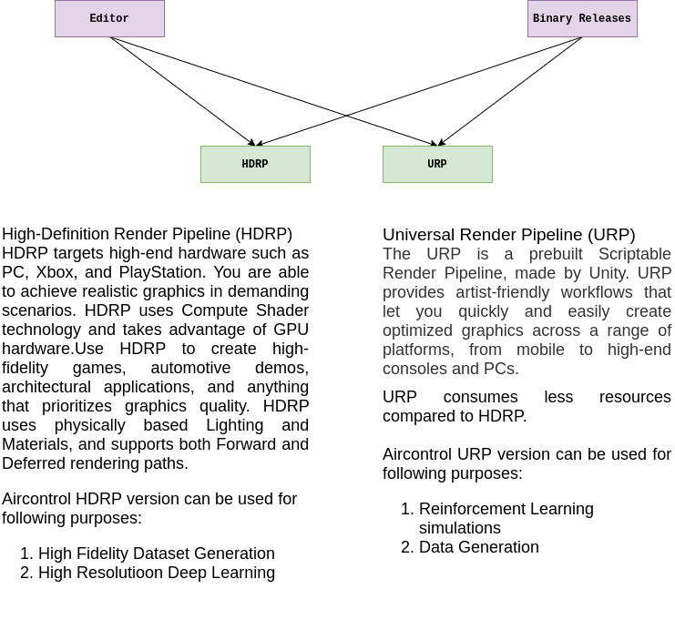
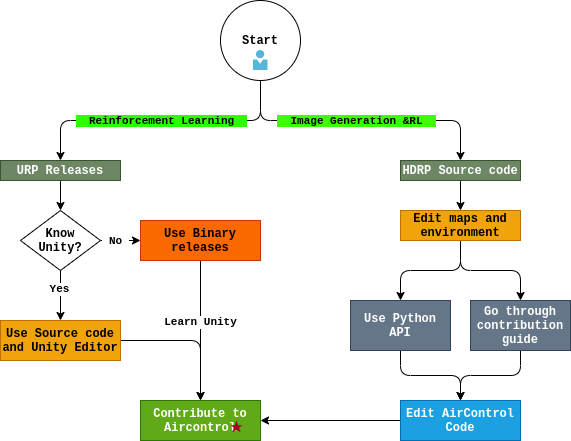

Getting Started¶
Aircontrol is made simple to use yet powerful. Aircontrol source code and binaries will be available for Unity URL and Unity HDRP. Aircontrol-Airplane can be controlled through Keyboard, Python API.
The Joystick control mechanism is a work in progress.
HDRP and URP¶
HDRP targets high-end hardware such as PC, Xbox, and PlayStation. You can achieve realistic graphics in demanding scenarios. HDRP uses Compute Shader technology and takes advantage of GPU hardware.
Use HDRP to create high-fidelity games, automotive demos, architectural applications, and anything that prioritizes graphics quality. HDRP uses physically-based Lighting and Materials and supports both Forward and Deferred rendering paths.
The Universal Render Pipeline (URP) is a prebuilt Scriptable Render Pipeline, made by Unity. URP provides artist-friendly workflows that let you quickly and easily create optimized graphics across a range of platforms, from mobile to high-end consoles and PCs.
The Universal Render Pipeline (URP) is a prebuilt Scriptable Render Pipeline, made by Unity. URP provides artist-friendly workflows that let you quickly and easily create optimized graphics across a range of platforms, from mobile to high-end consoles and PCs.
HDRP can be used for Dataset generation as well as for High-Resolution deep learning.
URP takes less compute resources compared to the HDRP. Hence it can be used for long-lasting simulations. URP{also can be used for data generation.}
Generally, HDRP is used for data generation and users might want to change the environment and bring more assets. Due to this HDRP source code is available and not the builds.
Linux, Windows, and Mac builds will be only available for the URP pipeline.

We have already seen when to choose the HDRP and URP paths.
Within URP again you have two choices: 1. Source Code:if you know Unity Engine and you want to change the base functionality go ahead with the source code. Please refer to the source code usage guide. 2. Binary Releases: If you are interested in performing the Reinforcement Learning tasks you can go ahead with the binary releases. Please refer to the binary usage guide.

Once you have a sufficient understanding of how Aircontrol works, Please contribute to the AirControl.